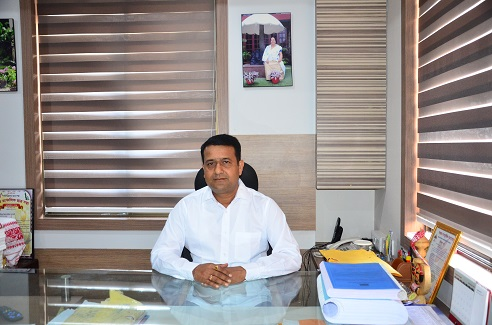

Sankardev IAS Academy Guwahati was established by Sailaja Sankkalp Social Trust in the year 2020 as an independent body with a view to create a bench-mark institution to achieve excellence in the toughest competitive examination in the country, i.e., Indian Administrative Service Examination which has now come to be known as Civil Services Examination. There is no scarcity of Assam-borne talented students who are competent to crack national and international level competitive examinations. But there is lack of educational institutions with full-fledged amenities which can provide holistic approach with all facilities to students according to their needs and interests. Therefore, there is urgent need to overcome such kind of situation and to provide all provisions and amenities for the coming new generation the 'Sailaja Sankkalp Trust' (SST), Assam established the top Boarding coaching institute in Guwahati with the technological, spiritual and infrastructural well-equipped Sankardev IAS Academy.
Mission
Sankardev IAS Academy has a vision to bring forward sharp minds of the nation having finest quality to become great nation builders and make sure that aspirants journey reaches the true destination and Motherland India gets dedicated, devoted and determined reservoir of meritorious civil servants (Human Capital) to lead India towards harmony and prosperity.
Vision
Sankardev IAS Academy believes indulging completely with aspirants and motivating them to reach the zenith. Academy helps aspirants to acquire confid ence and competence to emerge successful. With best mentors (serving in differe nt premier institutions in Delhi) academy does not complete syllabus only, but nurture the aspirants to qualify the examination. Objective of classroom programme is to give emphasis on mind power and skill-set development to train aspirants to make them capable to use their own resources optimally and emerge victorious in every sphere of their life.
Social Responsibility: Assistance for the Economically Backward Students :
Our objective is to start a movement on civil service examination preparation in the right candidate to start preparation. For a meritorious student who has zeal to become a civil servant but having poor economic condition will get a chance in the Sankardev IAS Academy Guwahati. The institute will give him/her support to prepare for the civil service examination in this Academy. A proper selection process will be followed to select such students.
Message from the Chairman's Desk
“There is only one difference between Dream and Aim.
Dream requires effortless
sleep
and Aim requires sleepless efforts.
Sleep for dreams and Wake up for Aims.”
~ Swami Vivekananda
Chairman & Founder
Sankardev IAS Academy
This is the age of competition and in the age of competition only the fit one will survive. The North-East India, especially the state of Assam has witnessed lots of agitation and insurgency for decade where the student community are the most sufferer. To establish rights and bring a positive revolution to the society the only path is through entering into policy making. Executives in India are considered to be one of the three pillars of the constitution and they are the one who draft all kind of policies. The numbers of executive (IAS, IPS etc.) from Assam and North-East are relatively low in comparison to the rest of the country and this is because these states are lacking a proper competitive environment and guidance. Students need to move to Delhi for a better coaching and guidance, which is not affordable for all. Sankardev IAS Academy is bringing these facilities to the doorsteps of the student community of Assam and North East at a very affordable cost.
Sankardev IAS Academy is a place for them who has an Aim and can give sleepless effort for achieving their dream. We want a movement among the students and parent community of Assam for civil service examination and Vivekananda Civil Service Academy will be the epicenter for this movement.
The aim of Sankardev IAS Academy is not only to coach the student for civil service examination but also to build a good citizen at the end, so that s/he can deliver the best to the society and the community get benefited. The Faculties are one of the best faculties hired from Delhi who have 10 to 15 years of proven experience of producing several civil servants. The coaching programme also includes residential programme where students can stay in hostel, avail 24X7 library facility and access the faculties who will lodge in the academy’s guest house. This place is for all the aspiring students; we will provide necessary helping hands to the economically weaker students who has a zeal to become a civil servant and a good citizen.
I hereby appeal to the students and their parent community to join this movement for civil service.
Highlights of Our Institution
Facilities
Library
Do you need any resource to clarify your concepts or do you want to dig deeper into any topic to enhance your knowledge base? Well, you do not require to buy all resources from the market or at any other platforms; we at Sankardev IAS Academy encourage aspirants to limit personal resource (study material for effective preparations and provide our student with plenty of books in our library for reference. Students enrolled in the academy can access the library resources at any time they require and add clarity to their concepts. We have repository of all essential and necessary books and study material at our library from basic to advanced subjects of all discipline. Our motto is to equip the students with all necessary resource in the course of their preparation for IAS and other Civil Services Exam.


Hostel & Accomodation
Do you belong to any far-flung area and worry about stay at Guwahati, or do you want to move out of you home for a better study environment? Do not worry, we at Sankardev IAS Academy have our own hostel at our campus. We have arrangement of secured and separate boys and girls stay at very nominal cost and affordable price for all. We also have association and tie-ups with PGs and real estate agents; we provide assistance to the students who wants to stay on their own out of the academy facilities and independently.
Mess
We equip all necessary requirements under the same roof for the students for their stay at Guwahati and prepare well themselves. We have mess facilities set up within the campus. Quality and home like food and snacks is served in the mess.